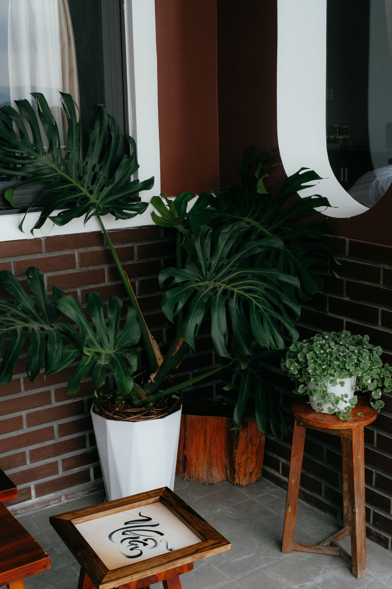
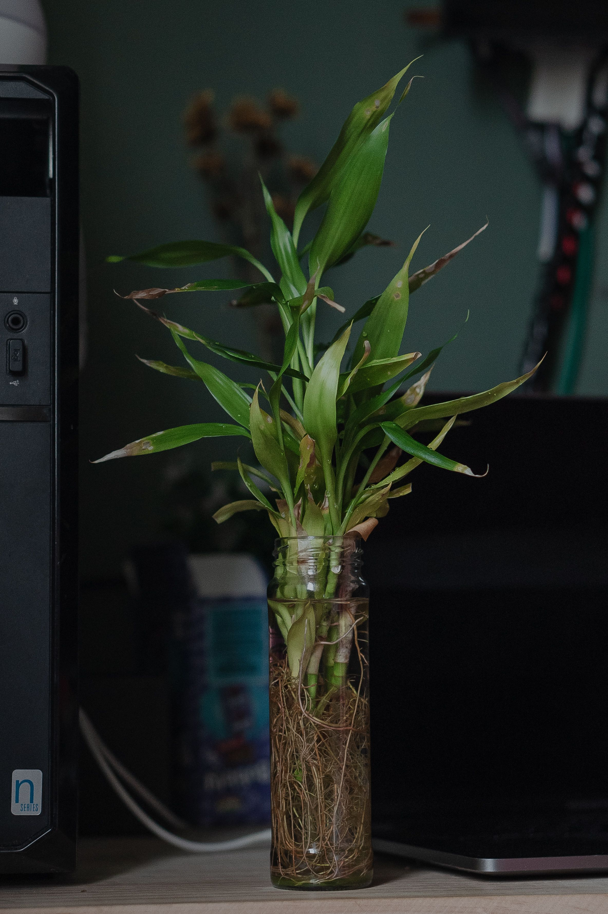
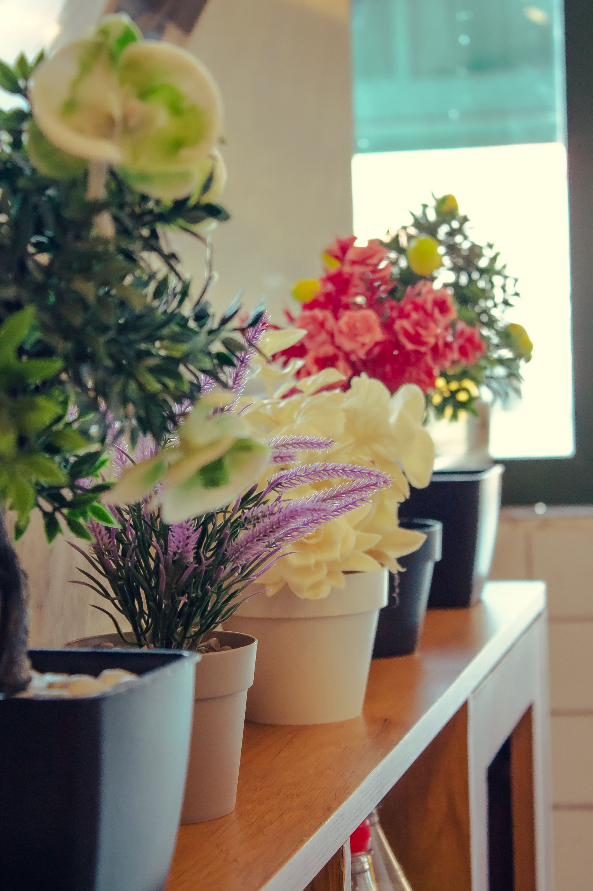

Why Create A Balcony Garden?
A balcony garden allows you to enjoy nature without needing a large backyard. With thoughtful planning, you can grow flowers, herbs, vegetables and ornamental plants in a compact space.
Whether your balcony is sunny or shaded, the right combination of plants and containers can transform it into a beautiful outdoor sanctuary.
Benefits Of A Balcony Garden
- Improves air quality.
- Creates a relaxing outdoor space.
- Provides fresh herbs and vegetables.
- Adds colour and natural beauty.
- Makes the most of limited space.

Choosing The Right Plants
Select plants based on the amount of sunlight your balcony receives. Mixing flowering plants, foliage plants and herbs creates a vibrant and balanced garden.
Flowering Plants
Petunias, marigolds and geraniums add bright seasonal colour.
Herb Garden
Grow basil, mint, rosemary and parsley for fresh cooking ingredients.
Vertical Plants
Use climbing plants and wall planters to maximize limited space.
Low Maintenance
Choose succulents and snake plants for easy balcony gardening.
A thoughtfully designed balcony garden can become your favourite place to relax, unwind and reconnect with nature.BloomNest Gardening Experts
Planning Your Balcony Layout
Before placing pots, observe how sunlight moves across your balcony during the day. Arrange taller plants at the back and smaller flowering plants near the front to create depth and visual balance.
Use vertical shelves, railing planters and hanging baskets to maximize growing space while keeping the floor open and comfortable.
.jpg)
Selecting The Right Planters
Lightweight pots made from plastic, fiberglass or resin are excellent for balconies. Ensure every planter has proper drainage holes to prevent waterlogging.
- Choose lightweight containers.
- Use pots with drainage holes.
- Select weather-resistant materials.
- Match planter sizes to plant growth.
- Use hanging baskets for extra greenery.
Watering & Maintenance
Balcony gardens often dry out faster than traditional gardens because they receive more sunlight and wind. Water plants early in the morning or during the evening for the best results.
Morning Watering
Water plants early to reduce evaporation and encourage healthy growth.
Regular Feeding
Apply balanced fertilizer every few weeks during the growing season.
Pruning
Remove dead flowers and leaves to keep plants healthy and attractive.
Pest Control
Inspect leaves regularly and treat pests before they spread.
Quick Balcony Gardening Tips
Sunlight
Choose plants based on your balcony's daily sunlight.
Water
Keep soil moist without allowing water to collect inside pots.
Space
Use vertical gardening to maximize small areas.
Style
Combine colourful flowers with green foliage for a balanced look.
Balcony Garden Inspiration




BloomNest Gardening Experts
Our gardening specialists share practical ideas for designing stylish balcony gardens that bring nature into every home, regardless of available space.